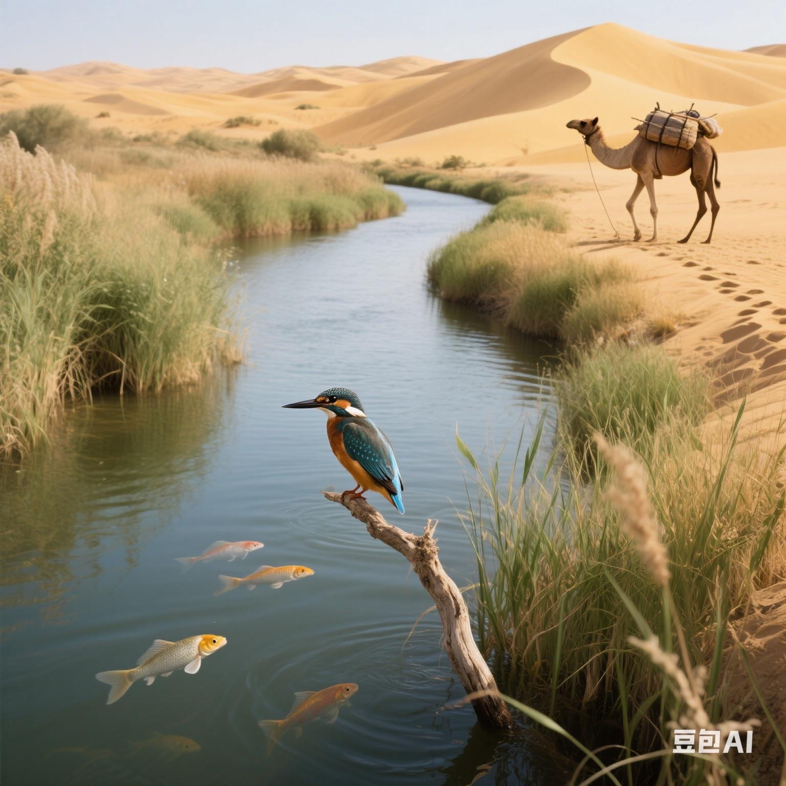
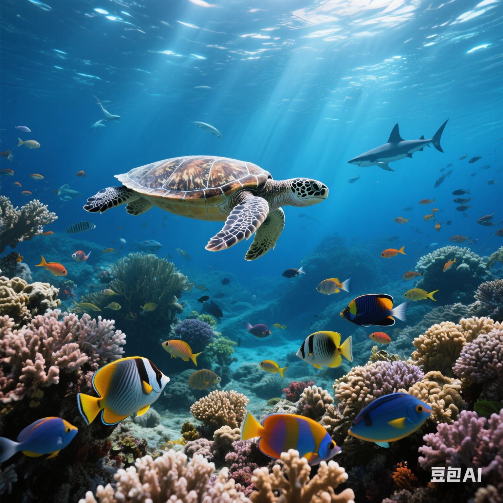
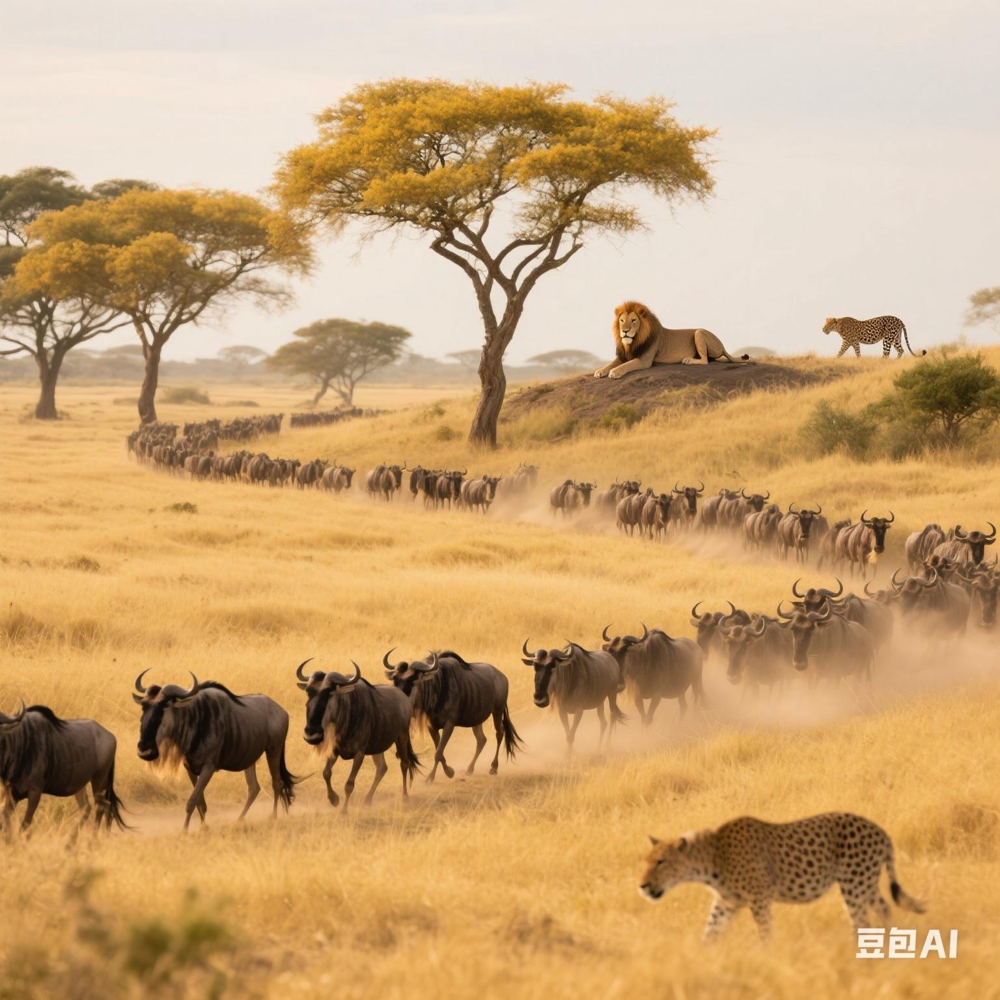
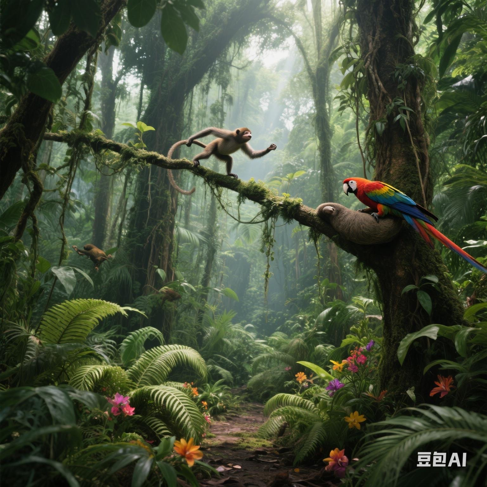
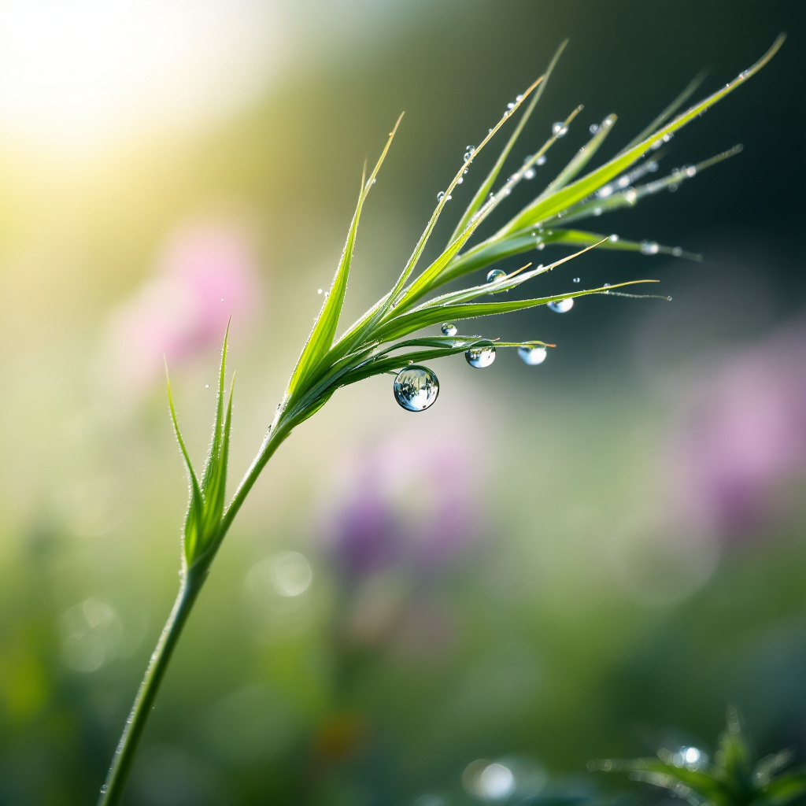
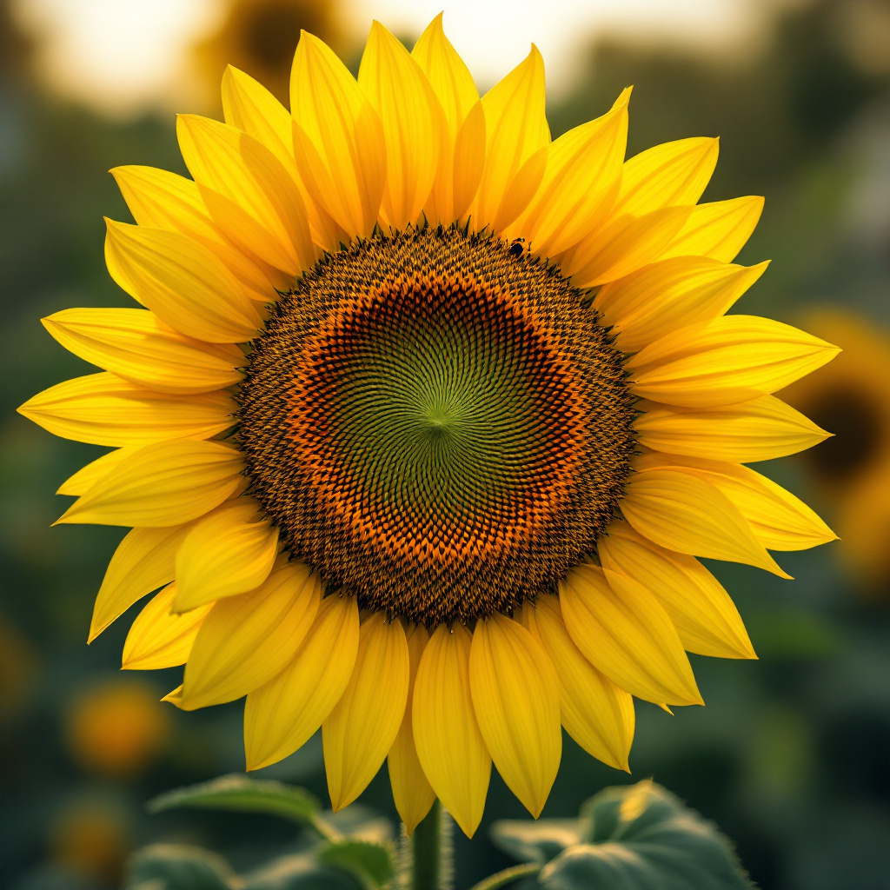
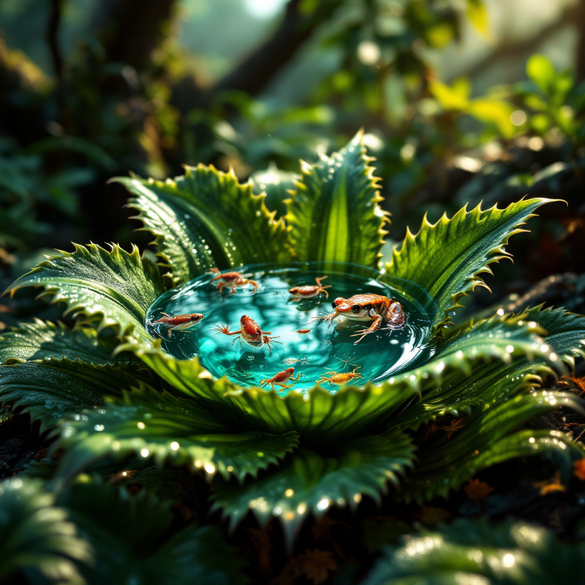
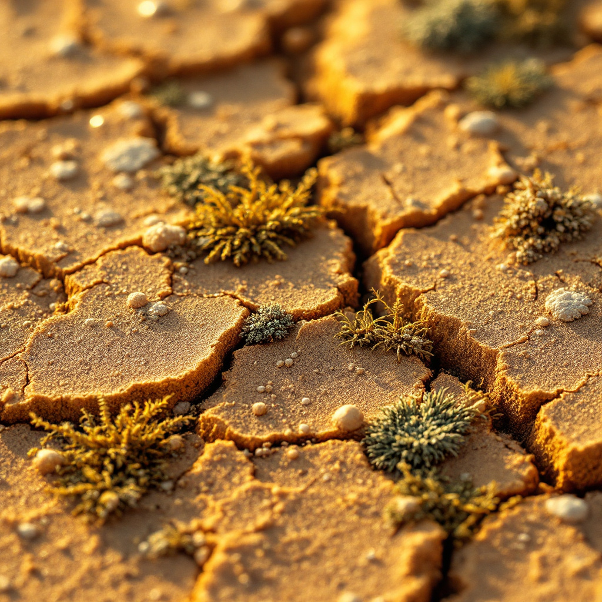
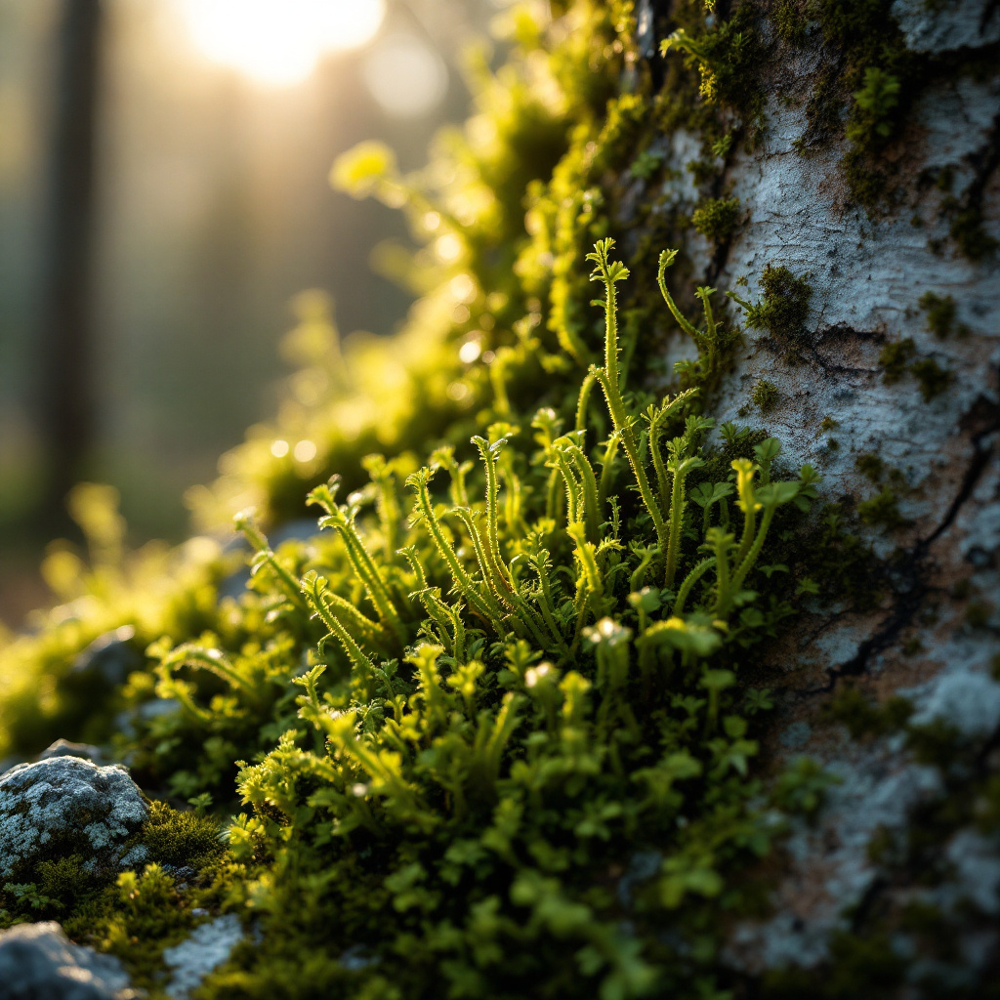

Ultra-detailed grass blade with beaded dewdrops refracting morning light, hyperrealistic 8K macro rendering of silica-cell wall ridges, droplet surface tension dynamics on hydrophobic cuticles, blurred wildflower meadow backdrop with spider silk glinting in mist, primary producer symbolism in grassland ecosystems

Ultra-detailed sunflower disk with Fibonacci spiral seed phyllotaxis, golden-hour backlighting revealing pollen-covered florets, hyperrealistic 8K macro textures of helical seed arrangements, blurred suburban garden background with honeybee pollinators, desaturated yellow gradients contrasted with ultraviolet floral guides
Ultra-detailed dandelion seed head in urban meadow, golden-hour light illuminating parachute-like pappus fibers (15–25mm), hyperrealistic 8K macro rendering of ribbed seed structures, floating seeds caught in air currents with blurred city park backdrop, biodiversity symbolism via wind dispersal mechanisms
Ultra-detailed dragonfly wing in freshwater wetland, golden-hour backlighting illuminating golden-angle branching venation patterns, dewdrops refracting prismatic light through nanostructured epicuticle layers, hyperrealistic 8K macro rendering of fibrous chitinous vein struts
and water droplet magnification effects, translucent wing membranes revealing Voronoi-like cell structures, indicator species symbolism for aquatic ecosystem health, blurred cattail marsh backdrop with water reflections
Ultra-detailed alpine tundra lichen thallus, fungal hyphae forming dense mesh networks intertwined with spherical green algal cells, frost crystals nucleating on hydrophobic upper cortex, hyperrealistic 8K macro rendering of photobiont pockets (algal clusters) and mycobiont hyphal sheaths, golden-hour light refracting through translucent frost layers, pioneer species symbolism in rocky substrate with desaturated alpine hues, cellular-level trophic exchange between symbionts
Ultra-detailed Arctic tundra scene, polar bear guard hair with hollow core
and porous shell
magnified to show micro-ridged cuticle patterns, melting ice crystals nucleating on hydrophobic hair surfaces, golden-hour light refracting through translucent ice layers, hyperrealistic 8K macro rendering of air-trapping nanostructures, climate change symbolism via destabilized ice-hair interface, desaturated polar whites contrasted with azure meltwater hues

Ultra-detailed Amazon rainforest bromeliad with a central water-filled tank formed by overlapping leaves, hosting translucent poison dart frog tadpoles, mosquito larvae suspended in rainwater, and minute freshwater crabs, hyperrealistic 8K macro rendering of hydrophobic leaf trichomes directing water flow, golden-hour sunlight refracting through water droplets clinging to serrated leaf margins, microhabitat biodiversity symbolism with detritus-rich pool supporting aquatic life cycles, desaturated green hues contrasted with neon-blue tadpole chromatophores, blurred canopy backdrop with epiphyte-covered branches
Ultra-detailed split orchid seedpod releasing dust-like seeds, translucent spindle-shaped embryos with balloon-like air sacs (0.1–6mm), seed surfaces showing nanoscale ridges and crystalline air sac textures under electron microscopy, mist-shrouded cloud forest backdrop with gnarled epiphyte-covered trees, golden-hour light refracting through airborne seeds, evolutionary adaptation symbolism in wind-dispersal mechanisms, hyperrealistic 8K macro rendering of seed coat microstructures, blurred moss-covered understory with dripping humidity
Ultra-detailed cross-section of African savanna termite mound, intricate clay tunnels with coarse sand/fine clay matrix, fungal gardens cultivated by Macrotermitinae termites breaking down cellulose, hyperrealistic 8K macro rendering of clay particle alignment and hyphae networks, golden-hour sunlight filtering through porous mound walls, bolus-based construction with saliva-bound soil aggregates, ecosystem engineering symbolism via nutrient cycling, desaturated ochre tones contrasted with fluorescent fungal mycelium, cross-section revealing vertical ventilation shafts, blurred savanna landscape with Acacia trees.
Ultra-detailed peacock feather quill, microscopic structure revealing 2D photonic-crystal arrays of melanin rods (100nm diameter) embedded in keratin matrix , barbules with fanwise-aligned melanin rods creating iridescent blue-green hues under golden-hour light , nanostructured keratin layers scattering light into prismatic color shifts, Indian Subcontinent monsoon humidity atmosphere, evolutionary adaptation symbolism in tropical birds, hyperrealistic 8K macro rendering of barbule surface nanoarchitecture, blurred jungle backdrop with dew droplets on adjacent feathers
Ultra-detailed mangrove roots with salt crust formations, juvenile fish (iridescent scales) and neon-colored copepods, barnacles with textured calcareous shells, hyperrealistic 8K macro rendering of biofilm-covered pneumatophores, golden-hour light refracting through turbid tidal water, marine nursery ecosystem symbolism, symbiotic mollusc communities, desaturated coastal hues with fluorescent copepod accents.
Ultra-detailed temperate forest floor at twilight, bioluminescent mycelium threads glowing blue-green as they interconnect tree root networks, slow-motion spore puffs releasing from fruiting bodies with golden-hour backlighting, hyperrealistic 8K macro rendering of filamentous hyphae textures and web-like mycelial matrices, translucent spore trails dispersing through humid air, Wood Wide Web symbolism with nutrient exchange particles visible, aerial mycelium colonizing moist soil with decomposing leaves, desaturated earth tones contrasted with cyanobacteria fluorescence
Ultra-detailed view of Arctic diatoms in melting sea ice, geometric silica shell chains forming fractal patterns, fractured ice matrix with golden-hour light refraction, hyperrealistic 8K macro rendering of nanoporous silica cell walls, biogenic silica concentrations glowing under polarized light, blurred Arctic seascape background with ice floes, base of Arctic food webs symbolism, diatom bloom dynamics with microzooplankton interactions, desaturated blue/white hues contrasted with chlorophyll fluorescence

Ultra-detailed cracked arid desert soil crust, golden-hour lighting casting long shadows, filamentous cyanobacteria and lichen forming a cohesive biofilm matrix, sand grains adhering to microbial strands, textured calcium carbonate aggregates, hyperrealistic 100x magnification close-up showing dust particles and web-like biofilm strands, warm amber/orange hues with subtle green chlorophyll fluorescence, unsung ecological engineers symbolism, desiccation-resistant microbial colonies, 8K macro texture rendering.
Ultra-detailed coral polyp colony under UV light, fluorescent green/cyan tentacles glowing with symbiotic zooxanthellae [[1], [5]], textured calcium carbonate exoskeletons with subtle translucent microplastics embedded in crevices, hyperrealistic 8K macro photography, bioluminescent glow contrasting against dark reef backdrop, vibrant cyan/orange fluorescence, marine life incubator symbolism, prismatic light refraction through coral ridges
Ultra-detailed monarch butterfly wing, tropical rainforest atmosphere, microscopic scale patterns forming kaleidoscopic fractal geometry, nanostructure ridges refracting prismatic light shifts (iridescent blues/oranges), dew droplets on translucent membranes, blurred rainforest canopy background with orchids and mist, fragile pollinator ecosystems symbolism, hyperrealistic macro photography style, 8K resolution

Ultra-detailed temperate forest moss (Pleurozium schreberi) on birch bark, golden-hour light casting shadows between leafy gametophytes, hyperrealistic 8K macro textures of rhizoid networks, blurred woodland backdrop with lichen-crusted stones, pioneer species symbolism in ecological succession
Ultra-detailed tulip petal cross-section, golden-hour backlighting revealing anthocyanin pigment gradients and vascular bundles, hyperrealistic 8K macro textures of conical epidermal cells, blurred spring garden backdrop with pollinating hoverflies, desaturated pastel hues contrasted with UV-reflective floral guides
Ultra-detailed garden spiderweb glistening with dewdrops, hyperrealistic 8K macro rendering of proteinaceous silk strands (0.1–4µm diameter), light refraction through aqueous microspheres, blurred suburban fence backdrop with orb-weaver spider waiting in hub, nutrient-cycling symbolism in urban ecosystems